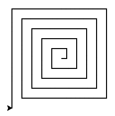

3. Répéter¶
Dans ce chapitre, nous allons découvrir comment utiliser une boucle for pour répéter un bloc d’instructions un certain nombre de fois. Nous allons voir que :
la boucle
forpermet de répéter des instructions,la structure
for i in range(n):permet de répéter un blocnfois,le deux-points
:est toujours suivi d’un bloc en indentation.
La répétition¶
Revenons vers un exemple simple : dessiner un carré.
Si nous regardons le code de près, nous pouvons voir que nous répétons 4 fois les mêmes deux instructions forward() et left().
Ne serait-ce pas pratique de pouvoir répéter ces deux instructions 4 fois ?
C’est possible avec une boucle for.
Exercice
La ligne for i in range(4): va répéter 4 fois le bloc en indentation qui suit afin de dessiner un rectangle.
Transformez le rectangle en triangle.
Solution
from turtle import *
d = 100
for i in range(3):
forward(d)
left(120)
Variable d’itération i¶
Que représente i dans l’expression for i in range(n) ?
C’est ce qu’on appelle une variable d’itération. Cette variable commence à 0 et augmente de 1 à chaque répétition jusqu’à n-1. Pour visualiser cette valeur nous pouvons l’afficher dans le dessin avec l’instruction write(i).
Polygone régulier¶
Avec une boucle for, nous pouvons simplifier le dessin des formes symétriques.
Exercice
Observez bien la double indentation dans le code suivant :
la première pour
defla deuxième pour
for
Dans les deux cas un : est suivi d’un bloc en indentation. En Python vous pouvez avoir plusieurs niveaux d’indentation.
Définissez la fonction hexagone() pour dessiner un hexagone, et appelez cette fonction.
Solution
...
def hexagone():
for i in range(6):
forward(100)
left(60)
triangle()
carre()
pentagone()
hexagone()
Escalier¶
Pour dessiner un escalier, il faut simplement répéter dans une boucle le dessin pour une seule marche. Nous utilisons la variable i pour numéroter les marches.
Éventail¶
Que se passe-t-il si nous dessinons une ligne droite et tournons chaque fois d’un petit angle ?
C’est un peu comme un éventail qui s’ouvre. Les lignes de l’éventail sont numérotées en utilisant la variable i.
Exercice
Doublez l’angle de rotation dans left().
Que se passe-t-il si nous avançons plus que nous reculons ? Une toute petite modification du programme peut faire une chouette différence.
Exercice
Modifiez les valeurs dans forward() et backward().
Étoile¶
Voici une autre façon de toujours avancer, mais en tournant chaque fois d’un angle un peu plus petit que 180°. Essayons !
Losange¶
Si nous déformons les angles droits d’un carré, nous obtenons un losange.
Si nous dessinons un losange 6 fois, nous obtenons une fleur.
Exercice
Tournez d’un angle plus petit que 60° entre chaque losange.
Paquebot¶
Une boucle for est utilisée dans l’exemple suivant pour dessiner les hublots d’un paquebot. Les hublots sont numérotés en utilisant la variable i.
Rappel
La fonction dot(d, c) dessine un disque de diamètre d et de couleur c.
Vitesse¶
Vous pouvez changer la vitesse de la tortue avec la fonction speed(s).
Le paramètre vitesse s peut varier entre 1 (le plus lent) et 1000 (le plus rapide). Sa vitesse par défaut est de 3. Mettre la vitesse à 0 choisit automatiquement la vitesse maximum.
Exercice
Augmentez graduellement la vitesse de la tortue, en utilisant la variable i comme argument de vitesse.
Solution
from turtle import *
speed(2)
for i in range(36):
forward(280)
left(170)
speed(i+1) # +1 pour éviter de commencer à 0
Erreurs¶
Il est important de bien lire et comprendre les messages d’erreur. Dans cette section, vous allez découvrir les différentes catégories d’erreur et comment les corriger.
ImportError¶
Cette erreur survient lorsque vous essayez d’importer un module qui n’existe pas.
Exercice
Corrigez l’erreur d’importation.
SyntaxError¶
Cette erreur survient lorsque vous écrivez mal un mot-clé, ou si vous oubliez une ponctuation. Dans ce cas, le mot-clé mal écrit n’est pas reconnu et il n’est pas colorié correctement dans votre code.
Exercice
Corrigez les trois erreurs de syntaxe.
NameError¶
Cette erreur survient lorsque vous écrivez mal le nom d’une variable ou d’une fonction.
Exercice
Corrigez les trois erreurs de nom.
TypeError¶
Cette erreur survient lorsque vous ne mettez pas le nombre d’arguments corrects pour une fonction.
Exercice
Corrigez les trois erreurs de type.
Exercice récapitulatif¶
Exercice
Dessinez une spirale dont chaque segment est plus long que le précédent. Cette spirale sera formée de segments rectilignes. À chaque tour, la longueur du segment augmentera, créant ainsi un effet de spirale.

Commencez par un segment de longueur 10.
Pour chaque segment suivant, augmentez la longueur de 10 unités.
Tournez la tortue de 90 degrés après chaque segment.
Dessinez la spirale avec un total de 20 segments.
Vous devez utiliser une boucle for.
Téléchargez le fichier .py et déposez le sur Moodle à l’endroit prévu avec une capture d’écran du dessin.
Et à part le dessin ?¶
Les boucles sont primordiales dans tout programme informatique. La boucle for n’est d’ailleurs qu’un type de boucle (l’autre étant la boucle while).
Rappel
La fonction
print()permet d’afficher du texte.a = 0est une instruction permettant de créer une variableaet lui donner la valeur0.a = a + 3permet d’ajouter 3 à la variablea.
Exercice
Nous allons voir que les boucles peuvent être extrêmement utiles pour faire certains calculs.
Ecrivez un programme affichant tous les nombres entre 0 et 9.
Modifiez le programme pour afficher la somme des nombres de 0 à 9.
Modifiez le programme pour afficher la moyenne des nombres de 0 à 9.
Solution
# Partie 1
for i in range(10):
print(i)
# Partie 2
somme = 0
for i in range(10):
somme = somme + i
print(somme)
# Partie 3
somme = 0
for i in range(10):
somme = somme + i
moyenne = somme / 10
print(moyenne)